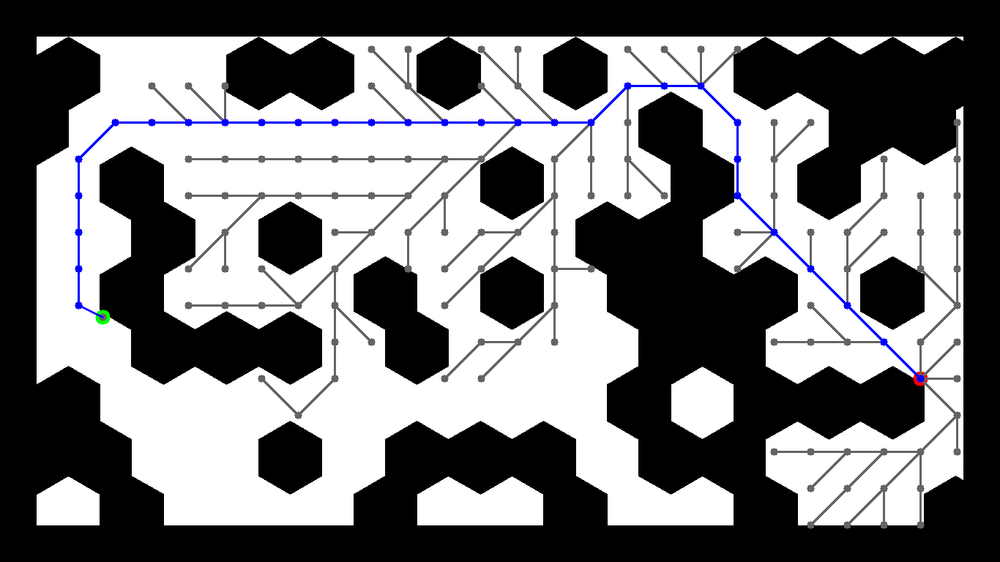
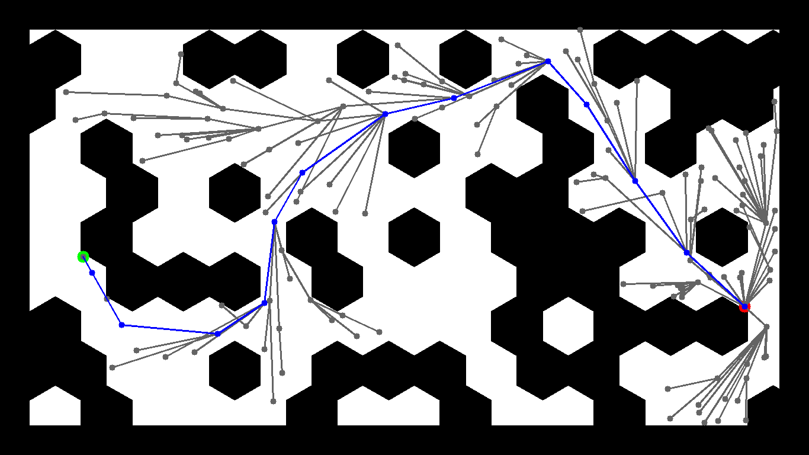
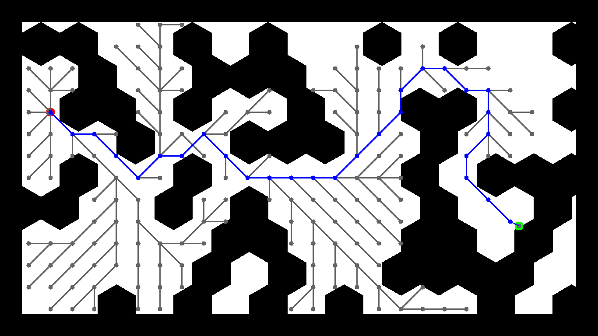
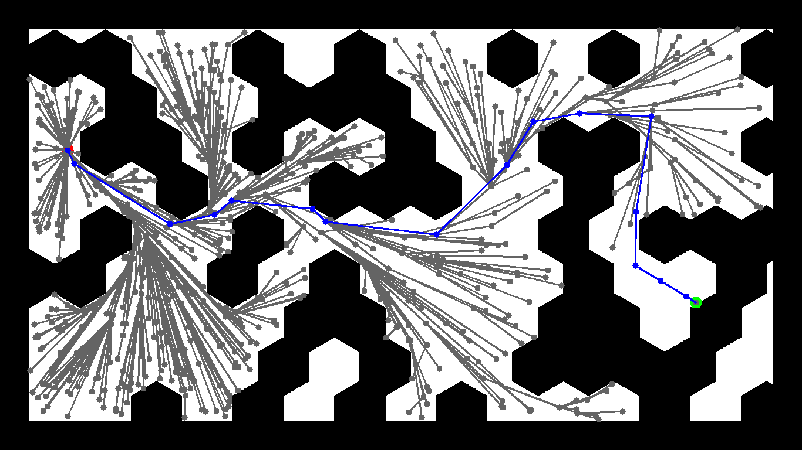
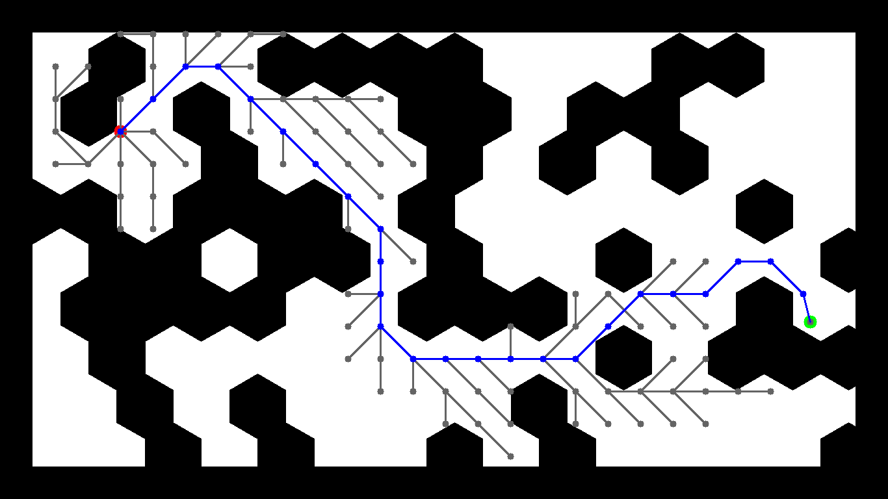
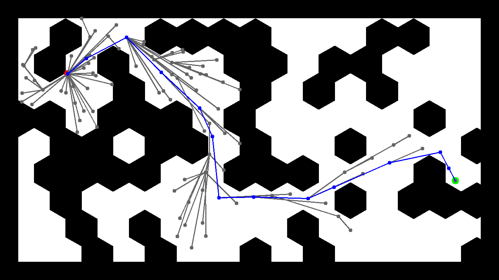

Robotic Navigation and Exploration · HW1
01 · Problem
Given a 2D map image with obstacles, a start pose, and a goal pose, compute a valid collision-free path between them. Two planners are required — one grid-based (A*) and one sampling-based (RRT*).
Map Format
Each map is a PNG image accompanied by an info.json
specifying pixel coordinates for start and goal.
White pixels are free space; black pixels are obstacles.
The raw image is converted to a boolean occupancy map for
collision queries.
All collision checks use the Bresenham line algorithm to rasterise a segment between two nodes and test every pixel against the occupancy map. This ensures no path segment passes through an obstacle even at oblique angles.
Shared
goal_threshold = 50 px — a node is considered
to have reached the goal when its L2 distance to the goal coordinate
falls within this radius.
A* specific
grid_size = 50 px — spacing between candidate
neighbour nodes in the 8-directional grid expansion.
RRT* specific
step_size = 50 px — maximum steering distance per
iteration.
search_radius = 200 px — neighbourhood radius for
re-parenting and rewiring.
02 · A* Implementation
A* is a best-first graph search that guarantees the optimal path under the given grid resolution. It combines a Dijkstra-style accumulated cost with an admissible heuristic to focus search toward the goal.
g(v) is the true accumulated cost from the start node to v. h(v) is the L2 (Euclidean) distance from v to the goal — an admissible heuristic that never overestimates, guaranteeing optimality.
Open list
A min-heap of (f, g, node) tuples via Python's
heapq. Ties in f are broken by g, preferring the
lower actual cost. Because heapq does not support in-place updates,
lazy deletion is used — stale entries are skipped
when popped if the node is already in the closed set.
Closed set
A set of confirmed nodes that will not be
re-expanded. A node enters the closed set when it is popped from
the heap and confirmed as having the minimum cost path.
Correctness guarantee
Because h(v) = L2 distance is admissible and the graph is non-negative, A* is guaranteed to return the shortest path expressible on the grid_size grid.
03 · RRT* Implementation
RRT* is a sampling-based planner that builds a tree of collision-free configurations by iteratively sampling random points, steering toward them, and rewiring nearby tree nodes to maintain near-optimal connections.
Re-parenting
Before inserting a new node, the best parent among all nodes within search_radius is selected — the one minimising total path cost, not just the nearest node.
Rewiring
After insertion, nearby nodes are checked: if routing through the new node gives a lower cost, their parent pointer is updated. Cost updates are propagated to all descendants via BFS to keep every node's stored cost consistent with its true path cost from the start.
sample_random_node() must be used for reproducibility.TA Clarification — stopping condition
Execution terminates on the first valid goal arrival. No further iterations are run to improve cost (per TA discussion forum response to Q3).
04 · TA Clarifications
The following clarifications were issued after the initial assignment release and are reflected in the implementation.
path and visited_nodes
are graded. visited_nodes must form a valid tree with
correct parent pointers and true cumulative costs at every node.
calculate_node_distance().
nearest() in RRT* uses pure Euclidean distance
only — no collision check. A sampled node behind an obstacle is
still valid as a steering target; collision is checked only after
steer().
05 · Results
All runs use random.seed(9999) for reproducibility.
Parameters: goal_threshold = 50 px, grid_size = 50 px,
step_size = 50 px, search_radius = 200 px.
A*
map1
RRT*
map1
A*
map2
RRT*
map2
A*
map3
RRT*
map3
A* is consistently fast (18–37 ms) — the grid constrains the search space and the heuristic guides expansion efficiently toward the goal. RRT* produces fewer path nodes (14–17 vs. 26–31) because it steers continuously rather than snapping to a fixed grid, enabling longer diagonal segments. RRT* runtime varies widely depending on how quickly random sampling finds a valid corridor; map2's narrow passages require far more iterations (655 visited nodes, ~2 s) before a path is found.
06 · Visualisations

map1 A*

map1 RRT*

map2 A*

map2 RRT*

map3 A*

map3 RRT*